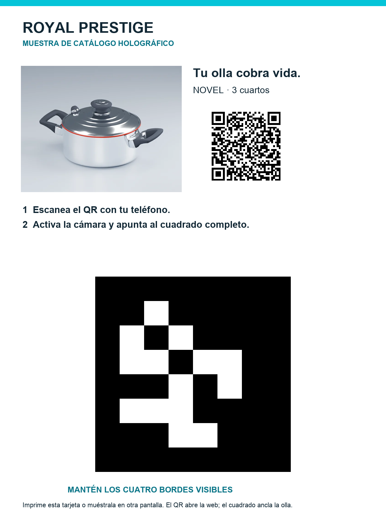

Una olla que aparece sobre el catálogo
Muestra esta tarjeta en una computadora o imprímela. Desde el teléfono, escanea el QR, activa la cámara y encuadra el cuadrado blanco y negro.
Usa otra pantalla o papel para la tarjeta: el mismo teléfono no puede apuntar su cámara a su propia pantalla.
